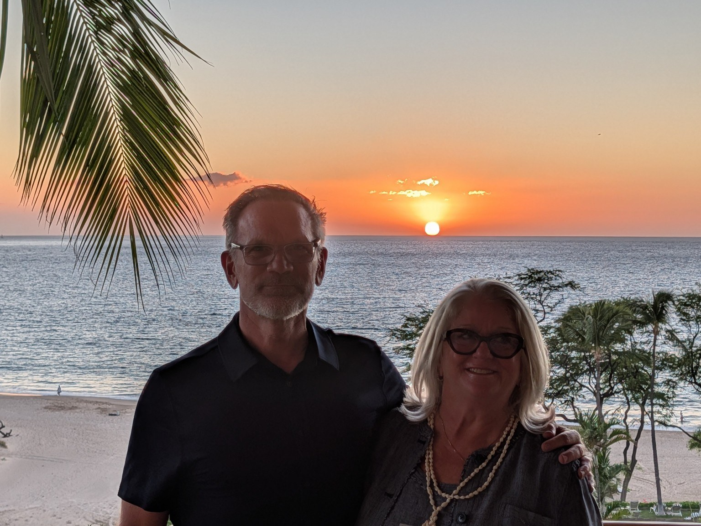
Westin Hapuna Beach Resort, Hawaiʻi Thursday Thursday, November 12, 2026 Hapuna Beach, Hawaiʻi
Sunset at Hapuna Beach. Another Thursday together in Hawaiʻi.
Watch the Kīlauea eruption video .Lava fountains at Kīlauea, Hawaiʻi Volcanoes National Park, November 5, 2026. Thursday Thursday, November 5, 2026 Hawaiʻi Volcanoes National Park
Six hours round trip to watch Kīlauea erupt.
Misti volcano, Arequipa, Peru Thursday Thursday, October 29, 2026 Arequipa, Peru
Snow on Misti. Blue skies over Arequipa.
Read the travel summary: Arequipa & Reflections on Peru →
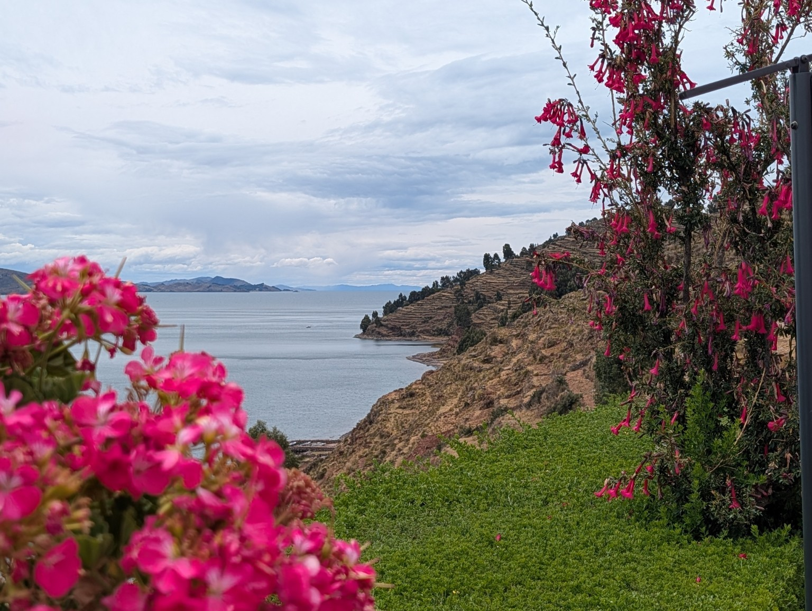
Taquile Island, Lake Titicaca, Peru Thursday Thursday, October 22, 2026 Taquile Island, Lake Titicaca, Peru
At lunch overlooking Lake Titicaca, I asked Shirley what we’d be doing right now if we were back in Irvine.
Read the travel summary: Lake Titicaca →
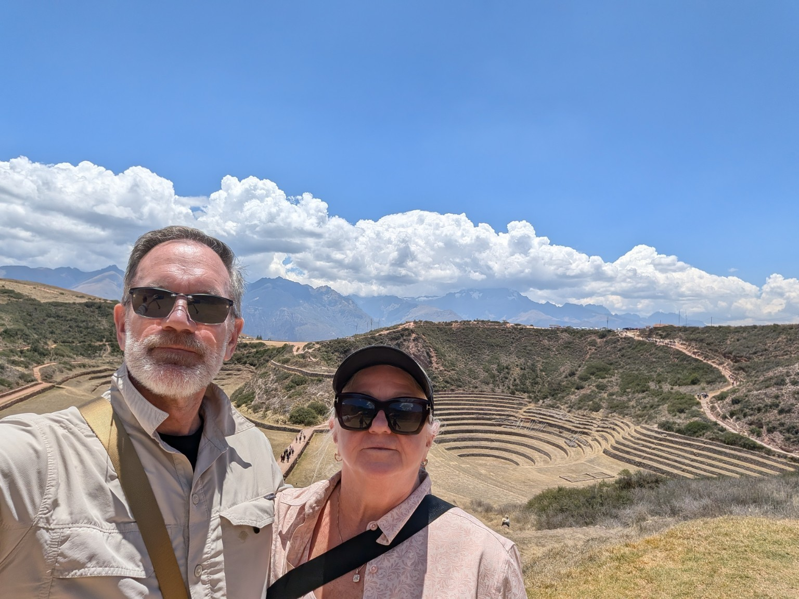
Moray, Sacred Valley, Peru Thursday Thursday, October 15, 2026 Moray, Sacred Valley, Peru
Exploring the circular Inca terraces at Moray, then the salt ponds of Maras. The Andes all around, and a beautiful day to be out together.
Read the travel summary: Sacred Valley →
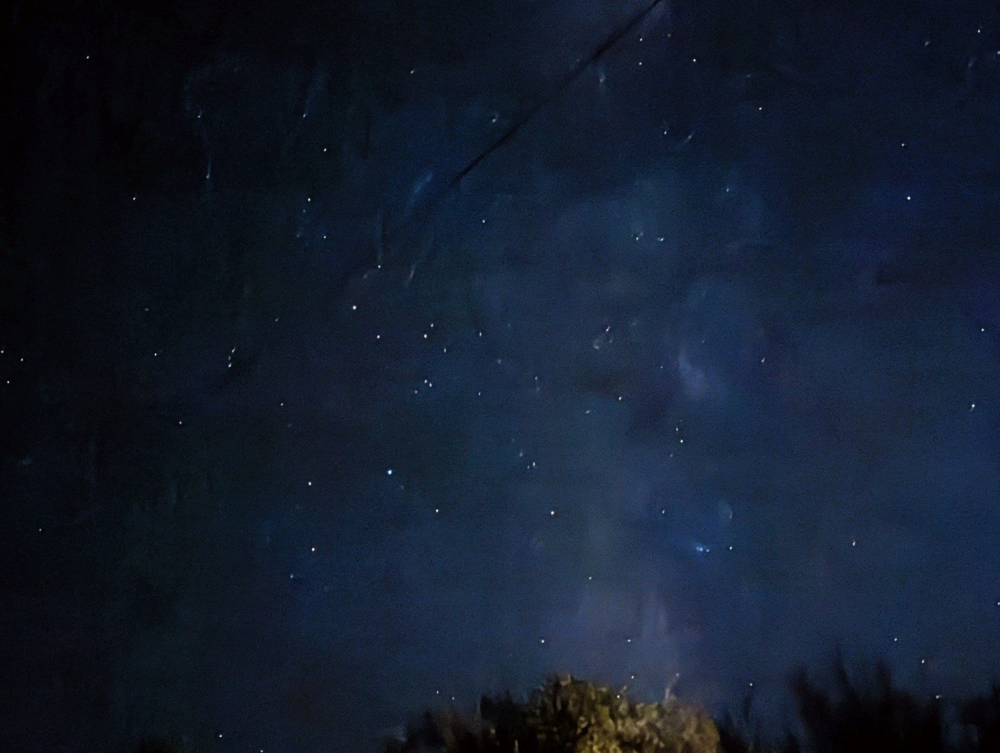
New Mexico Thursday Thursday, October 8, 2026 New Mexico
A dark sky full of stars. I haven’t seen many skies like this since I was a child. Still something special to stand outside and look up.
Read the travel summary: New Mexico →
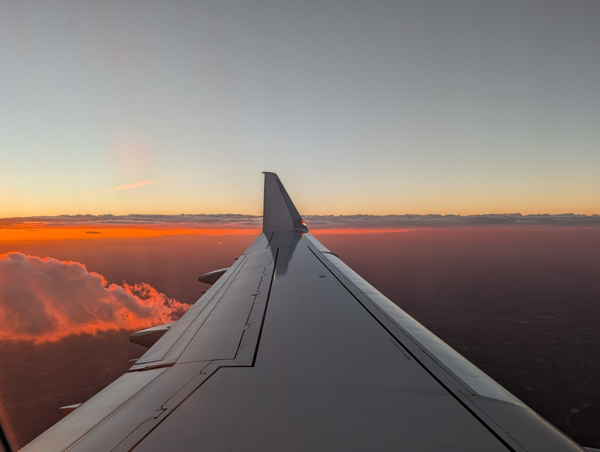
En route to Durango, Colorado Thursday Thursday, October 1, 2026 En route to Durango, Colorado
Happy to be on the road again.
Read the travel summary: New Mexico →
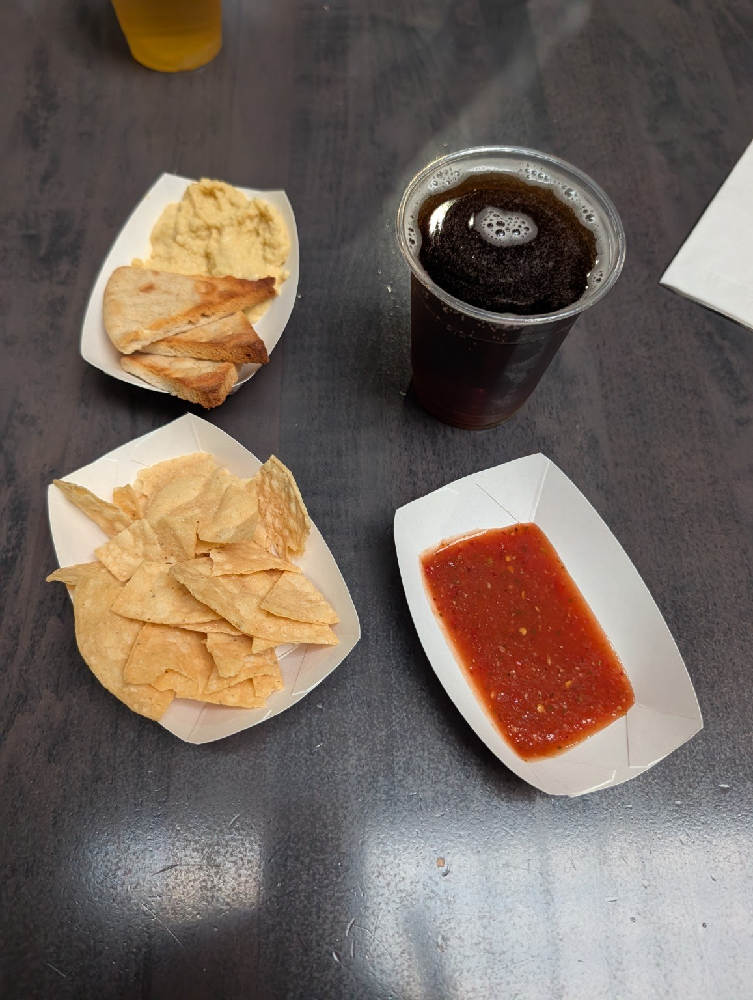
Hotel happy hour, Irvine, California Thursday Thursday, September 24, 2026 Irvine, California
Hotel happy hour.
Read the travel summary: Irvine →
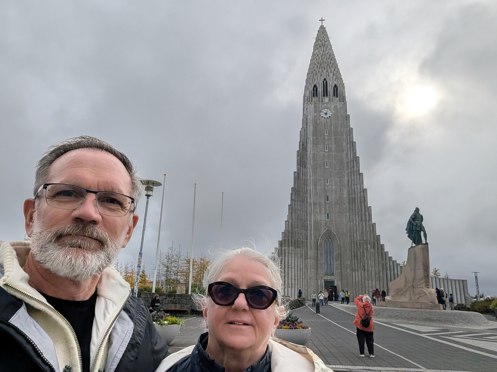
Hallgrímskirkja, Reykjavík, Iceland Thursday Thursday, September 17, 2026 Reykjavík, Iceland
Whale watching was cancelled, so we spent our last full day in Iceland walking Reykjavík one more time. Hallgrímskirkja, then an excellent dinner at ROK across the street.
Read the travel summary: Iceland →
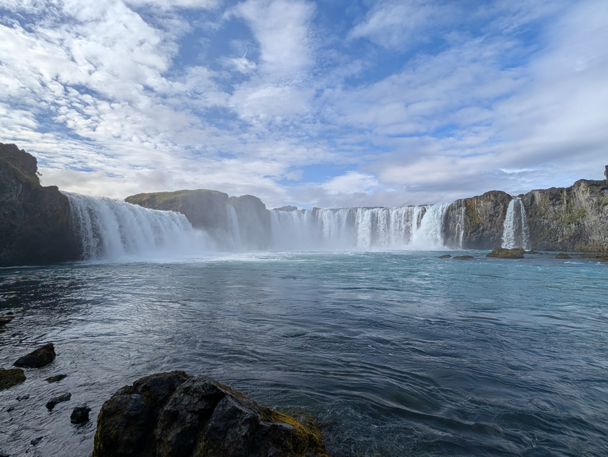
Goðafoss, Iceland Thursday Thursday, September 10, 2026 Goðafoss, Iceland
The roar of Goðafoss. Midges at Mývatn. Steam rising from the earth at Hverir. An ordinary Thursday in Iceland.
Read the travel summary: Iceland →
S/V Linden, East Greenland Thursday Thursday, September 3, 2026 East Greenland
Our last morning aboard the Linden . A week of fjords, icebergs, polar bears, long walks, and landscapes almost impossible to describe.
Read the travel summary: East Greenland aboard Linden →
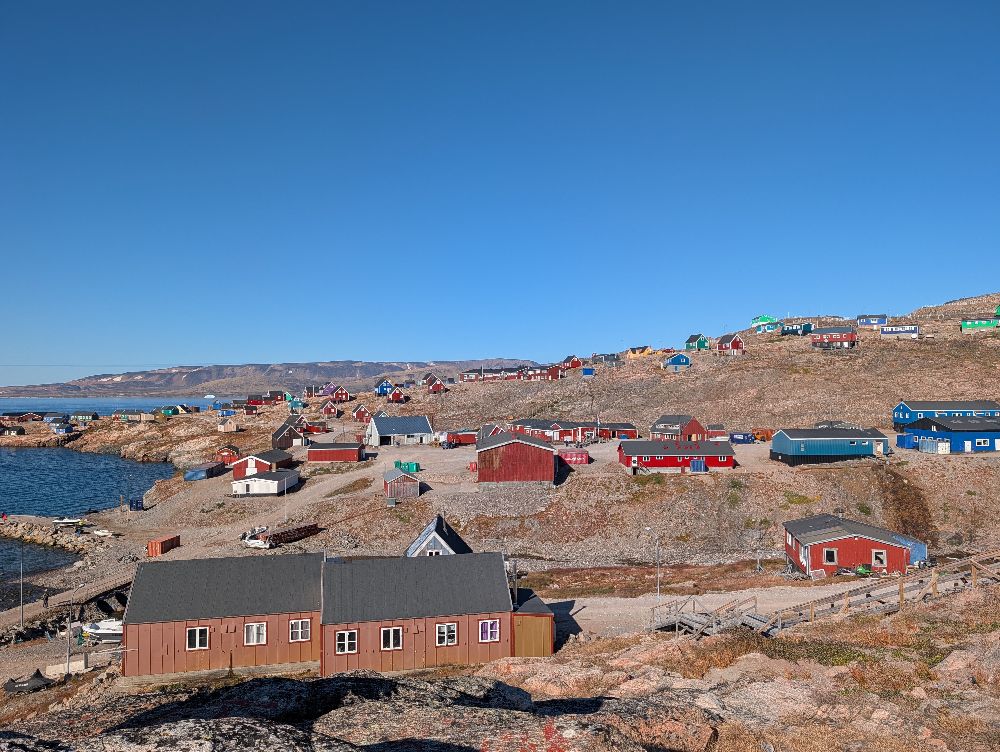
Ittoqqortoormiit, Greenland Thursday Thursday, August 27, 2026 Ittoqqortoormiit, Greenland
Awake around five and topside for a beautiful morning. We were anchored off Ittoqqortoormiit.
Read the travel summary: East Greenland aboard Linden →
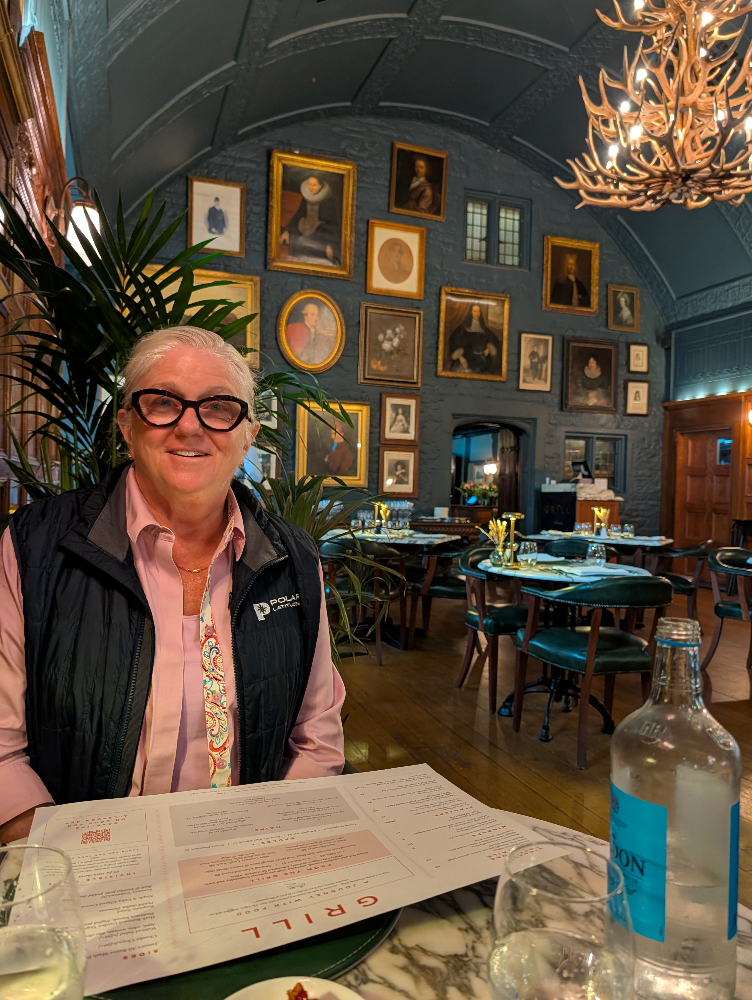
The Lygon Arms, Broadway, England Thursday Thursday, August 20, 2026 Broadway, England
Off the ship that morning and into the Cotswolds. One-lane roads, farms and countryside, a walk through Broadway, a burger and a pint.
Read the travel summary: Broadway & the Cotswolds →
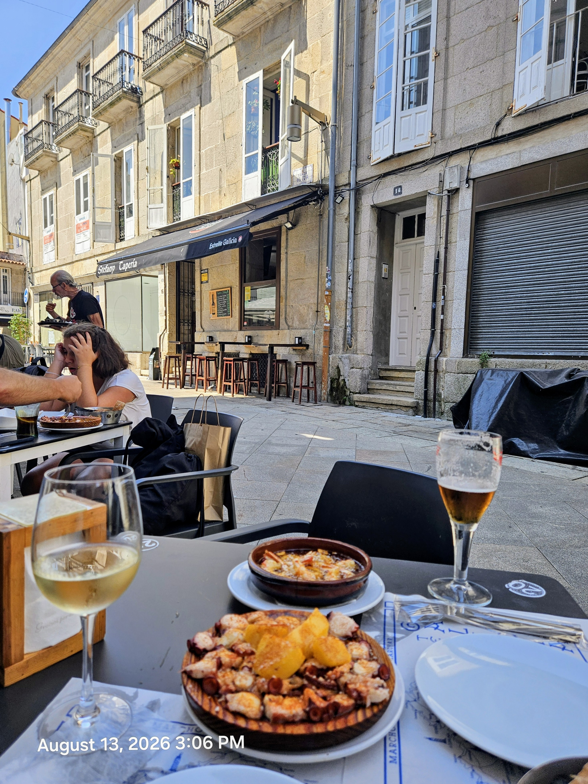
Stefany Taperia, Vigo, Spain Thursday Thursday, August 13, 2026 Vigo, Spain
Galician octopus, prawns, bread, a local beer, and €2.80 Albariño.
Read the travel summary: The Eclipse Cruise →
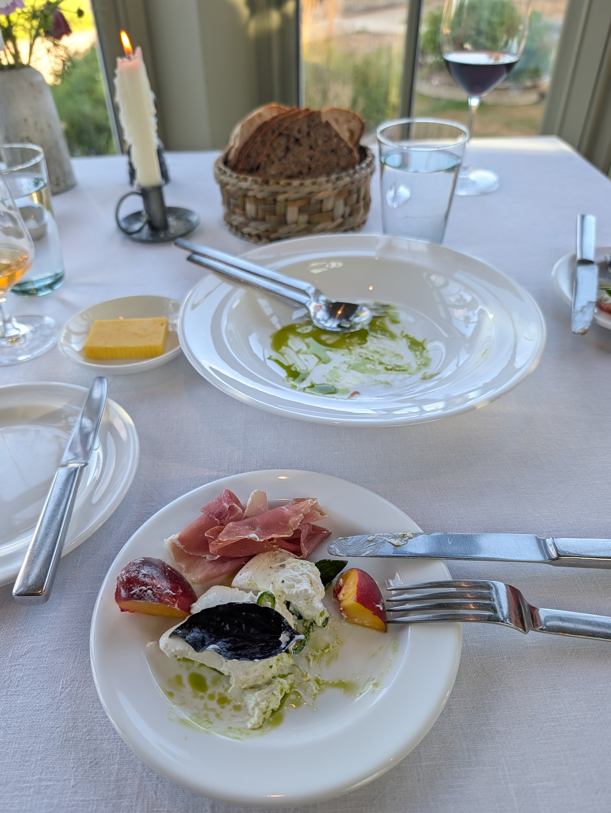
Heckfield Place, Hampshire, England Thursday Thursday, August 6, 2026 Heckfield Place, Hampshire, England
We declined the bread.
Read the travel summary: London & Heckfield Place →